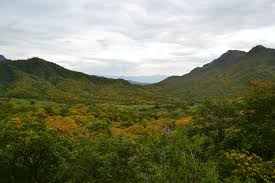

Clima en Piura
El clima en el departamento de Piura se caracteriza por ser predominantemente seco y cálido durante la mayor parte del año, con pocas variaciones estacionales significativas. La región experimenta un clima desértico subtropical, con temperaturas que suelen superar los 30°C (86°F) durante el día, especialmente en la temporada de verano, que va de diciembre a marzo. Las noches pueden ser frescas, pero rara vez llegan a temperaturas extremadamente bajas debido a la influencia del océano Pacífico. Durante el invierno, de junio a septiembre, el clima se vuelve un poco más fresco y agradable, con temperaturas diurnas que rondan los 25°C (77°F) y noches más frescas. Sin embargo, las precipitaciones son escasas en esta región, ya que Piura se encuentra en la zona de influencia de la corriente de Humboldt, lo que limita la formación de nubes y la llegada de lluvias. A pesar de ello, ocasionalmente pueden presentarse lloviznas o neblinas, especialmente en las zonas cercanas a la costa. La humedad relativa en Piura tiende a ser baja, lo que contribuye a la sensación de calor, aunque la presencia de brisas marinas puede proporcionar algo de alivio en las áreas costeras. En resumen, el clima en el departamento de Piura se caracteriza por ser seco, cálido y soleado en la mayor parte del año, con pocas lluvias y temperaturas consistentemente altas, lo que lo convierte en un destino ideal para quienes disfrutan del clima tropical.
Flora y Fauna respectiva en la Región
El departamento de Piura, situado en la costa norte del Perú, posee una riqueza biológica notable adaptada a sus diversos paisajes que van desde los áridos desiertos costeros hasta las montañas andinas. En sus zonas áridas destacan especies como el algarrobo (Prosopis spp.), el huarango (Prosopis pallida), y el zapote (Capparis scabrida), que han desarrollado mecanismos únicos para sobrevivir en condiciones de extrema sequedad. En los valles interandinos, se cultiva algodón y caña de azúcar, actividades que coexisten con la presencia de especies como el zorro costeño (Pseudalopex sechurae) y el cóndor andino (Vultur gryphus), símbolos de la fauna local. Entre las aves, se destacan el picaflor de barbijo (Heliangelus zusii), endémico de los bosques secos del norte peruano, y el loro de cabeza azul (Hapalopsittaca fuertesi), cuya distribución se extiende desde los Andes hasta los bosques tropicales. La conservación de estos ecosistemas es crucial para salvaguardar la biodiversidad única de Piura, que se enfrenta a desafíos como la desertificación y la pérdida de hábitat debido al desarrollo humano y el cambio climático.
Recursos Naturales
El departamento de Piura, ubicado en el norte de Perú, se destaca por su abundancia y diversidad de recursos naturales que sustentan tanto la economía como la vida cotidiana de sus habitantes. En su costa, las extensas playas y el océano Pacífico brindan una rica fuente de recursos pesqueros, siendo la pesca una actividad económica fundamental en la región. Además, los manglares costeros no solo son hogar de una variada fauna marina, sino que también actúan como barreras naturales contra la erosión costera y como criaderos de peces y mariscos. Hacia el interior, los valles fértiles irrigados por los ríos de la región, como el río Piura, son el corazón de la agricultura piurana. Cultivos como el arroz, el algodón, el maíz y los mangos son abundantes en esta zona, contribuyendo significativamente a la producción agrícola del país. Además, la región cuenta con importantes reservas de petróleo y gas natural, que son explotadas en la zona norte, aportando a la economía energética del país. En términos de recursos naturales renovables, Piura alberga una diversidad biológica única, con especies endémicas tanto en sus bosques secos como en sus ecosistemas acuáticos. Sin embargo, la preservación de estos recursos enfrenta desafíos debido a la deforestación, la contaminación y el cambio climático. En resumen, los recursos naturales de Piura, que van desde la pesca y la agricultura hasta el petróleo y la biodiversidad, son fundamentales para el desarrollo sostenible de la región y requieren una gestión cuidadosa para garantizar su conservación a largo plazo.
Relación del Hombre con su Medio
La gestión de recursos naturales y entorno por parte de los lugareños y el pueblo piurano es casi, por no decir netamente, económica. Es decir, los alrededores y naturaleza en Piura ha sido ciertamente benevolente. Las personas han podido gestionarlos de forma adecuada debido al desarrollo infraestructural (por ejemplo de riego) en la región. Un ejemplo de esto puede ser si tocamos minería, no podemos ignorar los yacimientos de petróleo que abundan en el territorio. La industria manufacturera y su producción representan el 66% de la actividad económica en el departamento, lo que no deja pensar más que, junto al incremento de empleo en la zona, hay más pobladores trabajando en agencias pesqueras u otros ejemplares más concretos. A pesar de esto, no podemos negar que la tala ilegal, producto de la falta de conciencia de la sociedad, se puede interpretar como la causa principal de la deforestación tan característica en la zona.
Gestión de Recursos por el gobierno Regional
El gobierno regional de Piura despliega una serie de estrategias para gestionar y aprovechar los abundantes recursos naturales que posee la región en aras del desarrollo sostenible y el beneficio de sus habitantes. En términos de pesca, se promueven políticas que fomentan la pesca responsable y sostenible, incluyendo la regulación de las actividades pesqueras para evitar la sobreexplotación de los recursos marinos y garantizar la conservación de las especies.
En el ámbito agrícola, el gobierno regional impulsa programas de irrigación y tecnificación agrícola para optimizar el uso del agua y aumentar la productividad de los cultivos en los valles fértiles de la región. Además, se promueve la diversificación de cultivos y la implementación de prácticas agrícolas sostenibles que minimicen el impacto ambiental y fortalezcan la resiliencia frente al cambio climático.
En cuanto a los recursos energéticos, el gobierno regional trabaja en colaboración con el gobierno central y el sector privado para garantizar una explotación responsable de los recursos petroleros y gasíferos, promoviendo prácticas que minimicen los impactos ambientales y sociales y maximicen los beneficios económicos para la región.
Por último, en lo que respecta a la conservación de la biodiversidad, se implementan medidas para proteger los ecosistemas naturales de Piura, incluyendo la creación y gestión de áreas protegidas, la promoción del ecoturismo y la sensibilización ambiental entre la población.
Zonas Protegidas

Parque Nacional Cerro de Amotape: Está dedicado a la protección de los bosques secos que se encuentran en la región de Piura.
Manglares de San Pedro: Está dedicado a la preservación de la biodiversidad y también brinda servicios ambientales.
Zona reservada Illescas: Está dedicada a la conservación de los ecosistemas frágiles y la protección de la biodiversidad.
Reserva Nacional sistema de islas, islotes y puntas guaneras: Está dedicada a la conservación y protección de una gran cantidad y variedad de especies marinas y aves guaneras.
Área de conservación regional bosques secos de salitral - huarmaca: Está dedicada a proteger y conservar los bosques secos y las diversidad única que estos llevan. 